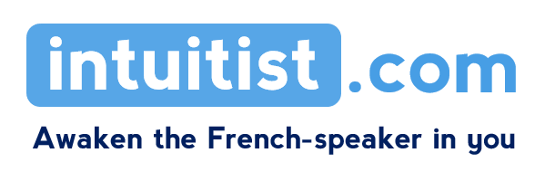

Traditional teaching conditions you to believe that French is a ‘foreign’ language, very different from English. This perspective
distances you from French, and as a result deprives you of your natural, innate intuition to speak it.
A way of learning specifically designed for English-speakers
Our approach, based on a simple and powerful insight, breaks this mould: English is not one language, it is two languages
in one. It is largely Germanic (a well-documented fact), but most of it comes from French-Latin (a fact rarely mentioned).
The two languages are much more similar than you realise. So you probably didn’t know that the majority of French
words are similar- or the same- in English. And what’s more, the structure/grammar of the two languages is quite
comparable.
Confidence
How many French words do you think you know? 400…? 500…? In fact, you know at least 5000 ! (and that’s just for starters).
You just don’t know you know them- they’re dormant in your sub-conscience. It’s by activating the enormous
‘English-French’ resources you have in you that you become confident, and overcome your fears and doubts in
French.
With intuitist, you create a real connection with French, enabling you to speak it more naturally and spontaneously than
you ever imagined.

Founded in 199x and based in Kinsale, Ireland, Intuitist offers...